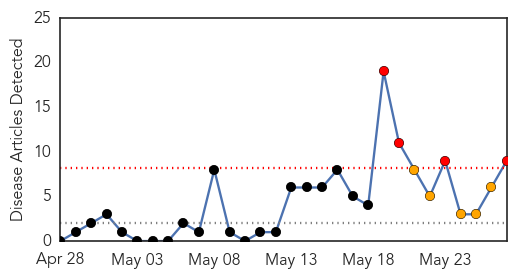
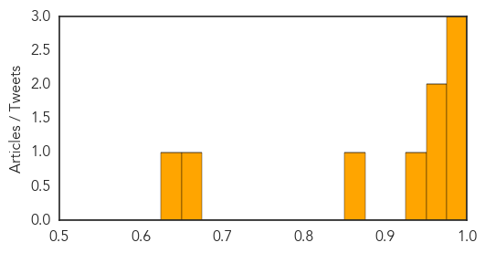

Cholera
30-Day Web Trend
4 alerts, 5 warnings

30-Day Twitter Trend
1 alerts, 0 warnings
Article Locations
Article Confidences
Top Articles:
- 0.998
- Hundreds infected by cholera in warn-torn S Sudan: WHO
- 0.996
- Hundreds Infected by Cholera in Warn-Torn S.Sudan — Naharnet
- 0.977
- UN responds to cholera outbreak in South Sudan
- 0.969
- Sudan: Foul water blamed for diarrhoeia in Sudan's White Nile
- 0.967
- Foul water blamed for diarrhoeia in Sudan’s White Nile - Sudan
- 0.932
- South Sudan Red Cross responds to cholera outbreak - South Sudan
- 0.857
- No new cases of cholera in Twic East
- 0.666
- Tens Of Thousands More South Sudanese Flee Fighting Following Truce
- 0.641
- Tens of thousands more South Sudanese have fled fighting following truce – UN agency
Top Tweets:
- 0.569
- >130K doses of oral cholera vaccine administered in Minkaman, Tomping and Juba3 camps in S. Sudan- Details in WER: http://t.co/S5yyTbD6Xx
Mold/Fungal
30-Day Web Trend
0 alerts, 0 warnings
30-Day Twitter Trend
0 alerts, 0 warnings

Article Locations

Article Confidences

Top Articles:
-
No articles found for May 27, 2014
Top Tweets:
-
No tweets found for May 27, 2014